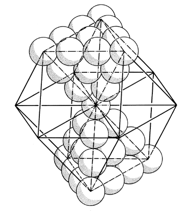

Fig. 466.31 Nuclear Tetrahedra Pairs: An isometric view of 39-ball aggregate of torqued, north-south pole, axial pair of tetrahedra at nucleus of vector equilibrium.
Copyright © 1997 Estate of R. Buckminster Fuller